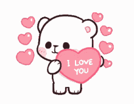

Mi bella bebecita |
Ya cumplimos 17 meses juntitos, y debo decir, que han sido los mejores 17 meses de mi vida. Quiero agradecerte lo que siempre haces por mí; el cómo te preocupas por mi bienestar y todo el amor que me das día a día. |

Si lo piensas bien mi amor, es algo del destino, u know? Me refiero a que justamente fuimos a la playa juntitos y estuvimos mucho tiempo juntitos y pasa esto jsjsjs. NO ES QUE ESTÉ DE ACUERDO, QUIERO VERTEEEE. Pero es como un "tranquilos, aprovechen mientras pueden que los voy a joder" del universo jajaja (PUTO UNIVERSO) y aunque haya pasado 1 mes y tanto sin ti y sin besar tus hermosos labios, cada día que pasa te sigo amando aun muchisimo más <3 |


Mmh... aunque ya lo dije en otra parte de la pagina mi amor, quería de verdad disculparme por no poder darte un regalito en condiciones como mereces :c Por eso quería hacer desde un principio algo así, para poder esforzarme el doble en algo hecho con mi propias manos, que quizás es algo super no común y que no esperarías como regalito jsjs <3<3<3 Y tengo que decirte un secretito mi amooor, la parte de cuarentena es en vdd una listita donde pondré un diario de amor de vez en cuando según los eventos que vivamos juntos y espero el día en poner en ellos uno como "nos mudamos juntos" y también "nos casamos"... sería como nuestra propia página/blog personal ^-^ |